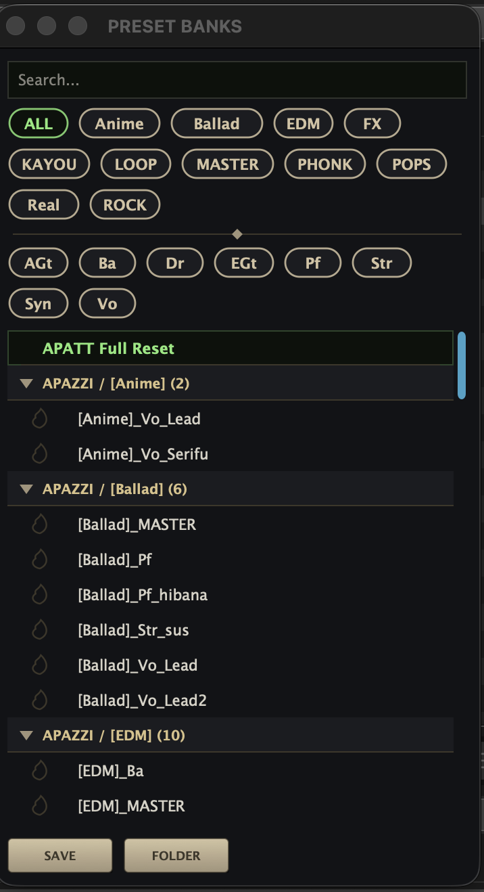
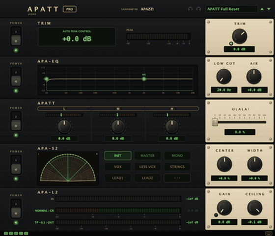

APATT
INSTANT TONE RACK
あなたは、音を選ぶ。APATTが、使える音にする。
音量・低域・密度・広がり・ピーク。いつも必要になる5つの処理を、ひとつのラックに。挿して、プリセットを選んで、少し触るだけ。
macOSAU / VST3
3バンド・ダイナミクスプリセット76本スキン16種
APATT ARTIST¥5,980
5段フルラック+24プリセット
APATT PRO¥12,800
67プリセット+より細かなコントロール
SIGNAL CHAIN — 5段
AUTO TRIM
もう赤いメーターとにらめっこしなくて、よくなりました。ピークを超えてくる素材も、“自動”で適切な音まで下げます。
APA-EQ
低域の濁りが、消えます。音の芯を殺さないぎりぎりまで削って、抜け感はAIRで。
APATT
3-BAND DYNAMICS
音作りは、この場所で決める。派手にも、上品にも。APATTの心臓部です。
僕はEQ以上に、マルチバンドコンプで音作りをしてきました。深く突っ込んで、低・中・高を整えて、小さい音を前へ出す。— APAZZI
APA-S2
音の芯を残して、自然に広げる。歌が、シンセが、埋もれなくなります。マスターにも。
アーティストの言葉を、はっきり届けたい。だから僕はボーカルを大きめに作ります。広げ方さえ正しければ、ボーカルは浮かせずに目立たせられる。— APAZZI
APA-L2
攻めても、割れない。回すだけで音圧が上がる、TRUE PEAK検出つきリミッター。
原因不明の音割れ。納品する曲がバリバリ言っていたら、仕事になりません。音割れが大嫌いな僕が、自分のために作った最後の砦です。もし、APATTを正しく調整しているのに割れている場合は、他の要因を探ってみてください。— APAZZI
AUTOMATION
オートパイロット
サビをループしてAUTOランプを押すだけ。ちょうどいい音圧に着地して、一番おいしいところを憶えて、離さない。
AUTO PILOT GIF(準備中)
火の見張り
音が焦げ始めた瞬間、原因のノブに火種が灯る。橙は「ギリギリ」、赤は「クリップ中!」。耳より先に、目でわかる。
FIRE WATCH GIF(準備中)
PRESET BANKS
ジャンル×楽器で選べる、実案件由来のプリセット(PRO 76本/ARTIST 24本)。ファイルひとつで仲間に渡せます。

16 SKINS
無料版を含む全エディションで着せ替え。音は変わりません、気分だけ変わります。

EDITIONS
音質はすべて同じです。違うのは「どこまで細かく触れるか」だけ。
| APATT
無料版 | ARTIST | PRO |
|---|
| 価格 | 無料 | ¥5,980 | ¥12,800 |
| 3バンド・ダイナミクス / スキン16種 | ● | ● | ● |
| AUTO TRIM / APA-EQ / APA-S2 / APA-L2 | — | ● | ● |
| オートパイロット / 火の見張り | — | ● | ● |
| プリセット(実案件由来) | — | 24本 | 76本 |
| クロスオーバー可変 / モード切替 / PRESET BANKS | — | — | ● |
macOS(Apple Silicon / Intel)、AU・VST3。有料版は1ライセンス=ご本人のMac台数無制限。
DEVELOPER
2,000万枚の現場で磨かれた判断を、あなたのDAWへ。
乃木坂46、AKB48、イコノイジョイなど、参加作品累計2,000万枚超。グラミー賞選出作品、日本レコード大賞受賞作品を手がける編曲家APAZZIが、実際の制作と同じ基準ですべて調整。
僕は20年近く、J-POPの現場で曲を作ってきました。どの曲でも、どの楽器でも、必ず同じ手順を積み上げてきました。トリムでゲインを整えて、EQで低域の濁りを削って、マルチバンドコンプで音を作る。ボーカルは浮かせずに前へ。最後にリミッターで、絶対に割らない。
「派手にするだけ」と思われがちな、いわゆる“OTT系”のマルチバンドコンプを、僕はずっと音作りの道具として使ってきました。手に馴染むまで使い込んだ道具は、好きな音まで最短で連れて行ってくれます。邪道と言われても、僕の音はここから生まれています。
APATTは、その手順をそのまま1台に封じ込めたプラグインです。段の並びは、僕が毎日やってきた順番のまま。オートパイロットも火の見張りも、音割れが大嫌いな僕が自分のために作った安全装置です。
挿して、選んで、少し触るだけで、プロの現場の音に届く。そこまでの近道として、僕の20年を使ってください。君の曲を、もう一歩前へ進める手助けになると思います。
— APAZZI
FAQ
商用利用できますか?
もちろんです。権利はすべてあなたに帰属します。無料版でも同じです。
Windowsでは使えますか?
現在はmacOS版(AU・VST3)のみ。Windows版はご要望の声を見ながら検討中です。
体験版はありますか?
無料版「APATT」が体験版を兼ねています。期限なし、そのままずっと使えます。
ライセンスは何台まで?
ご本人のMacなら台数無制限。スタジオと自宅の両方でどうぞ。
ネット接続や登録は必要?
不要です。ライセンスを一度読み込めば、以降オフラインで動作します。
OTT系と何が違う?
3バンド・ダイナミクスを中心に、前後の処理(整音・EQ・ステレオ・リミッター)まで1台に。深く突っ込んでも荒れにくい設計、センターを保つステレオ、割れないAUTOリミッター。
プリセットは共有できる?
ファイルひとつで渡せて、画面に放り込むだけで読めます。エディションが違ってもOK。
返金は?
条件を満たす場合は14日以内で対応します。
返金ポリシー参照。購入前に無料版で動作確認を。